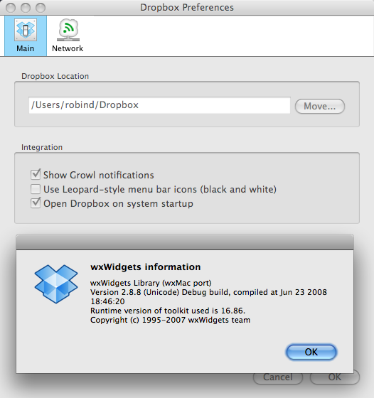

Time to kick myself again
Ever have one of those moments when you see some product or service and you think, "Doh! I should have thought of that!" because it is something that makes so much sense to you that you can't believe that you hadn't invented it yourself long before? Well I had one of those moments today with Dropbox. Dropbox is a cool service that integrates versioned shared storage on a centralized server with your Mac, Windows or Linux desktops. Syncronizing files between your computers, whereever they are located, is as simple as dragging the files into your dropbox. New or changed files are automatically replicated to your dropbox on the other computers. If existing files are changed then only the deltas are transported across the wire, in a rsync-like fashion.
Besides the simple file sharing among your own computers, there are some other nice features there too. Files are private by default, but there is a Public folder where you can put files you want to share with others, and you can easily get a public URL for them to paste into emails or IM messages. You can also create a shared folder that you share with other Dropbox users. Any changes you make in your shared folder are instantly updated to the other users' copy of the shared folder, and their changes are replicated back to you. In addition to all of that, you can easily get back to prior versions of changed files, and you can undelete files that have been deleted. And as if that wasn't enough, there is another special folder type that is an automatic photo gallery, you just need to drag the photos you want to share to a Photos folder and the rest is automatic.
You get 2GB of space for free, and you can get up to 50GB for $10 per month or $99 per year. If you sign up with this referal link then you and I will both get an extra 250MB.
Finally, here is the real kicker: The Dropbox user interface (setup wizard, preferences dialog, task bar icon, etc.) is written in wxPython! If the user ID I saw when I signed up is related in some way to the number of users (it is just a number so that may be possible) then that means that there are about three quarters of a million users running a wxPython application on their computers and they may not even know it. Good job guys, I'm impressed!
